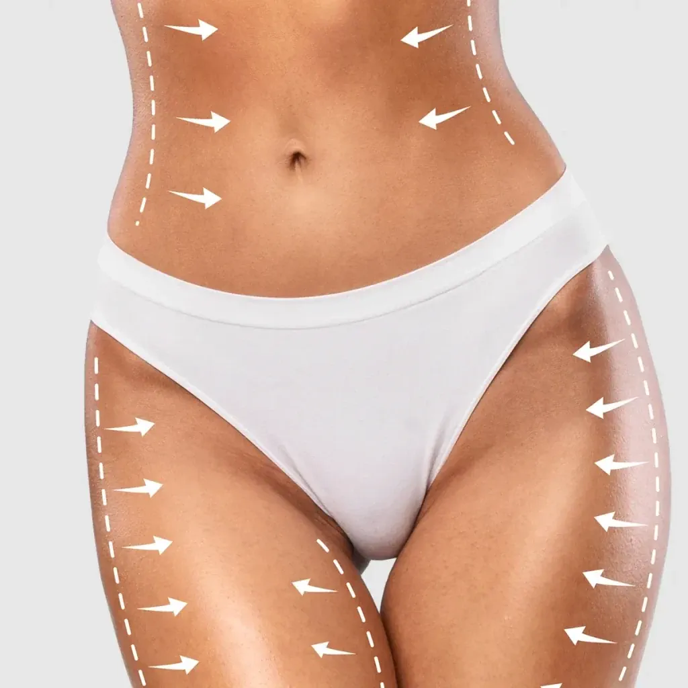
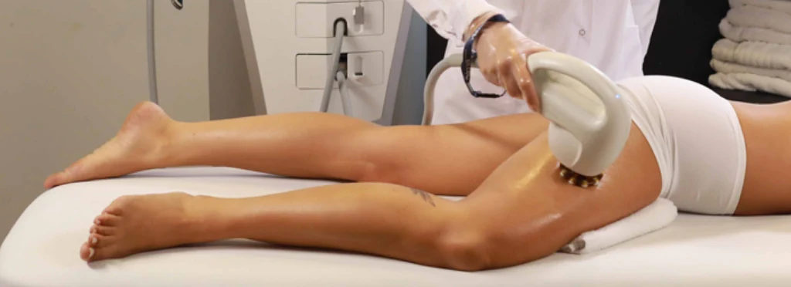
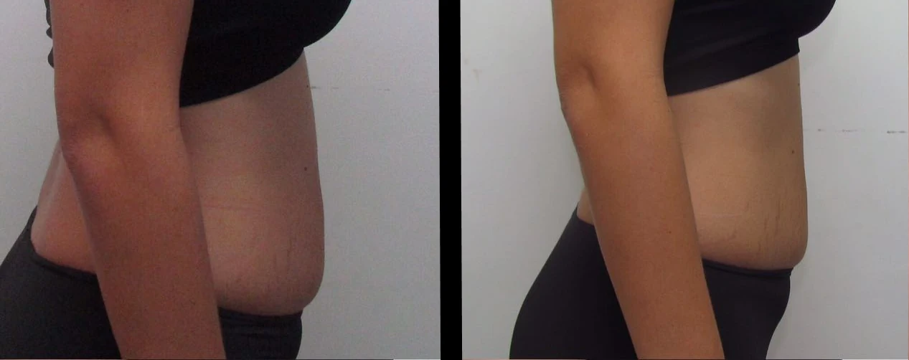

Modelado Corporal | Grasa Localizada
📍 Si vivís o trabajás en Palermo, nuestro consultorio es tu mejor opción.
Dedicación y Tiempo para Conocerte:
Agenda Tu Consulta Ya!📍 Si vivís o trabajás en Palermo, nuestro consultorio es tu mejor opción.
Dedicación y Tiempo para Conocerte:
Agenda Tu Consulta Ya!El modelado corporal es un conjunto de tratamientos no invasivos diseñados para mejorar la apariencia del cuerpo. Ayuda a reducir la adiposidad localizada, disminuir la grasa abdominal y mejorar la textura de la piel, combatiendo la celulitis.
En nuestro centro utilizamos Accent Prime, una tecnología avanzada que combina radiofrecuencia y ultrasonido para ofrecer resultados visibles en menos tiempo, sin necesidad de cirugía ni tiempos de recuperación prolongados.
El modelado corporal es ideal para:
El modelado corporal con Accent Prime es un tratamiento seguro y no invasivo. Sin embargo, en algunos casos pueden aparecer efectos secundarios leves como:
Estos efectos son transitorios y no requieren tiempo de recuperación. Para minimizar riesgos, es importante que el procedimiento sea realizado por profesionales capacitados.
Para obtener mejores resultados, te recomendamos seguir estos cuidados previos:
Durante la sesión, se utiliza un dispositivo que combina radiofrecuencia y ultrasonido para generar un efecto térmico en las capas profundas de la piel. Este proceso ayuda a romper los depósitos de grasa, mejorar la circulación y estimular la producción de colágeno.
La sesión es cómoda y sin dolor, y su duración varía según el área a tratar, pero generalmente oscila entre 30 y 60 minutos.
La cantidad de sesiones varía según el objetivo de cada paciente. En promedio, se recomiendan entre 4 y 6 sesiones, con un intervalo de 2 semanas entre cada una.
Los resultados son progresivos y se maximizan a partir de la tercera sesión, alcanzando su efecto completo alrededor de los tres meses.
Luego del tratamiento, notarás una reducción de grasa en las áreas tratadas, una piel más firme y tonificada, y una mejora en la textura general de la piel.
Para mantener los resultados a largo plazo, se recomienda llevar una alimentación balanceada y realizar actividad física de manera regular.
Estamos en Federico Lacroze 2306, Belgrano. Si estás buscando tratamiento un tratamiento corporal en Palermo supervisado por médicos, puedo ayudarte a mejorar con resultados progresivos y naturales.